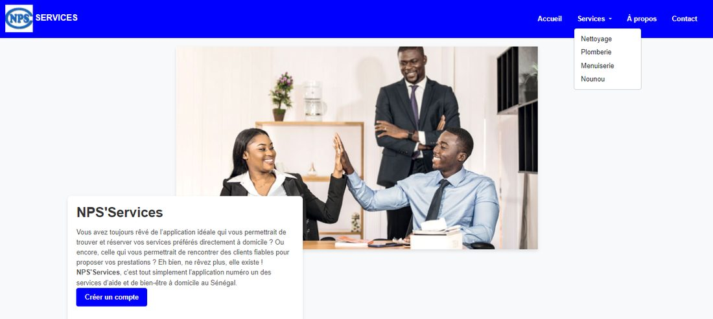
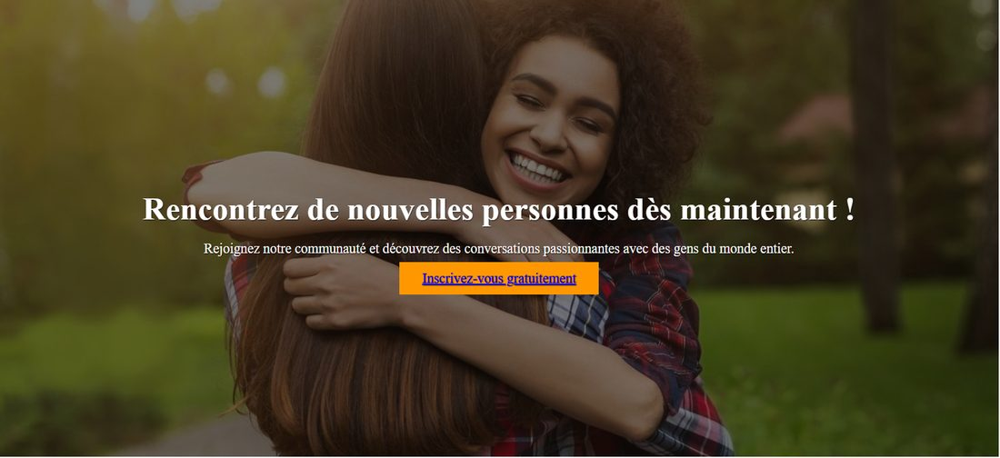
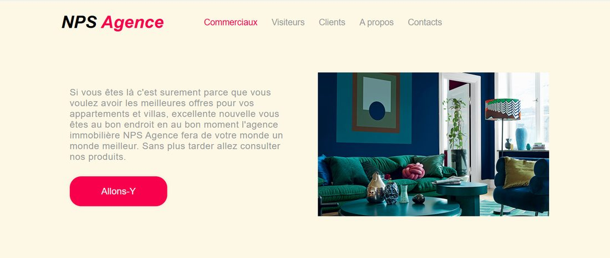
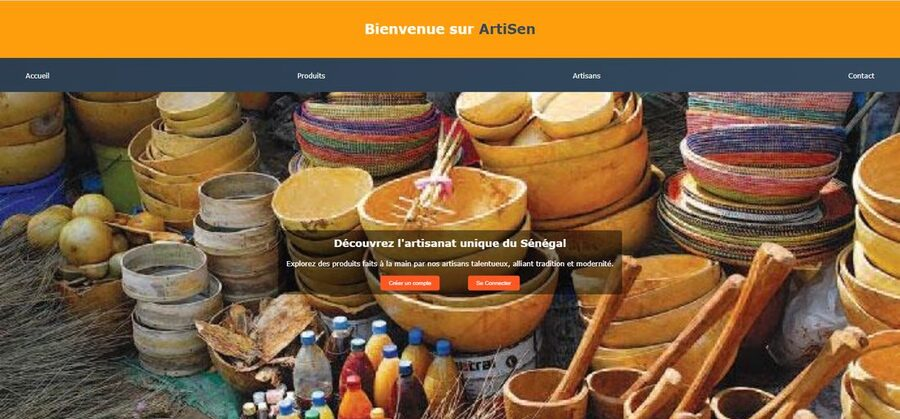
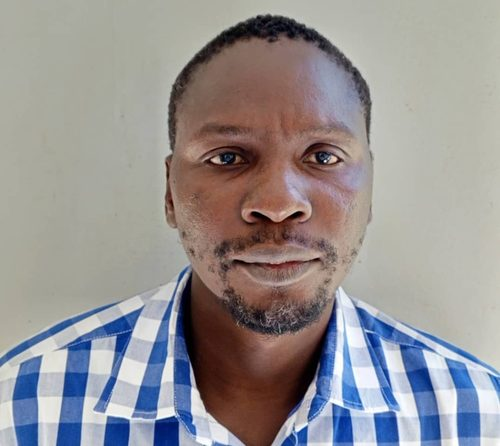
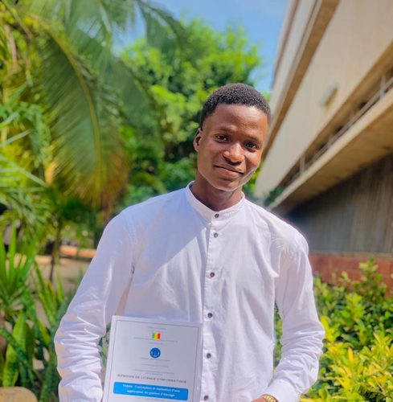

Ndeye Penda Sarr
Je m'appelle Ndeye Penda Sarr, j'ai 22 ans et je suis étudiante en master 1 en système d'informations réparties à l'UCAD. Passionnée par le développement web, j'aime créer des sites et applications alliant logique et créativité.
Ambitieuse et méthodique, je pratique régulièrement pour perfectionner mes compétences et explorer de nouvelles techniques. Mon objectif est de devenir développeuse full-stack.
Mes projets personnels sont des défis pratiques pour tester mes compétences en CSS et design responsive, comme la reproduction de ce CV inspiré de Canva. Chaque projet enrichit mon portfolio et renforce mon approche méthodique.
Mon parcours académique m'a appris la résilience et l'organisation, me permettant de gérer cours, travaux pratiques et projets. Ces expériences m'ont donné confiance en mes compétences et en ma capacité à réussir dans un environnement professionnel.
Je suis reconnaissante des opportunités d'apprentissage qui ont enrichi mon parcours professionnel et personnel. Chaque étape me rapproche de mon objectif de devenir une développeuse accomplie.
Projets réalisés
Voici quelques projets sur lesquels j'ai travaillé :
Application Web d'offres de services à domicile

Application Web de Chat / Site de Rencontre

Application Web d'une Agence Immobilière

Site Web pour l'Artisanat Sénégalais

Témoignages
Voici ce que certaines personnes pensent de mon travail :

"Ndeye Penda Sarr est une personne dynamique et très impliquée dans ses projets. Son souci du détail et sa rigueur dans le travail font d'elle une personne sur qui l'on peut compter."

"Travailler avec NPS pendant plus de 3 ans a été un privilège. Elle est une source constante d'inspiration, grâce à son sérieux, son ambition et sa passion profonde pour la programmation."